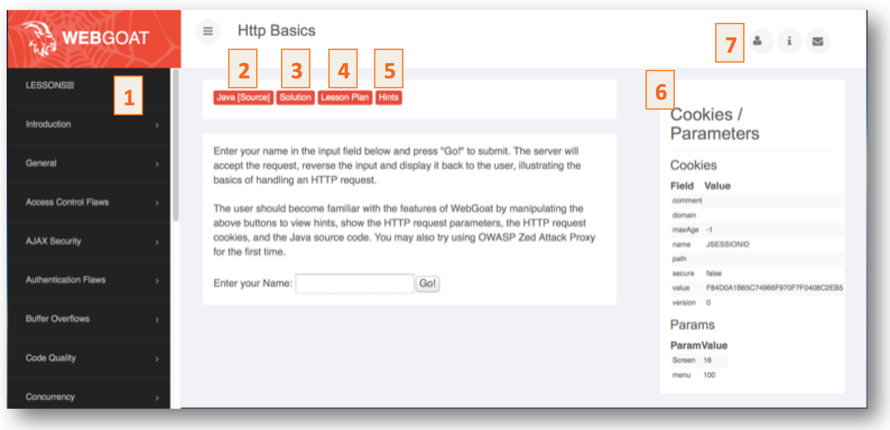

How To Work With WebGoat
Welcome to a brief overview of WebGoat
Environment Information
WebGoat uses the Apache Tomcat server but can run in any application server. It is configured to run on localhost although this can be easily changed, see the "Tomcat Configuration" section in the Introduction.
The WebGoat Interface
- 1. Lesson Categories in WebGoat. Click on a Category to see specific Lessons.
- 2. This will show the underlying source code.
- 3. This will show the complete solution of the seleted lesson.
- 4. This will show goals and objectives of the lesson.
- 5. This will show technical hints to solve the lesson.
- 6. This shows the HTTP request data.
- 7. If you want to restart a lesson you can use this link.
Solve The Lesson
Always start with a lesson plan. Then try to solve the lesson and if necessary, use the hints. The last hint is the solution text if applicable. If you cannot solve the lesson using the hints, you may view the solution for complete details.